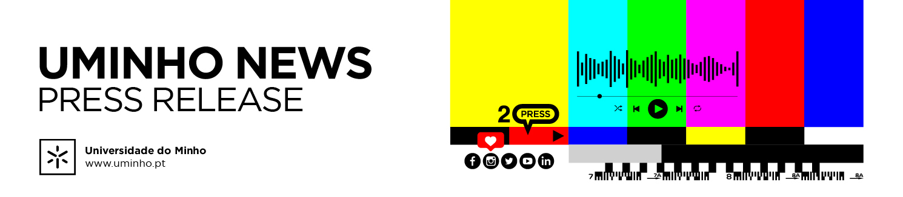

Informática da UMinho festejou os 50 anos com a sua comunidade
Os 50 anos do ensino regular da Informática e sua Engenharia na Universidade do Minho foram celebrados ontem no campus de Gualtar, em Braga, por 250 antigos e atuais alunos, docentes, investigadores, colaboradores, amigos e figuras convidadas. A agenda incluiu uma visita à exposição alusiva no Departamento de Informática (DI), um sunset no restaurante Panorâmico e atuações musicais, entre outras ações.
Na sessão, pautada pelo legado e pela partilha, intervieram o reitor da UMinho, Pedro Arezes, o presidente do Município de Guimarães, Ricardo Araújo, o diretor para o Desenvolvimento Económico do Município de Braga, João Machado, além do presidente da Escola de Engenharia da UMinho, António Vicente, do diretor do DI, Paulo Novais, do CEO da Pathena, António Murta (representando os ex-alunos do DI) e dos presidentes dos núcleos estudantis de Informática e Ciências de Computação, respetivamente Júlio Pinto e Gonçalo Soares.
Entre os participantes estavam ainda, por exemplo, o chairman da TAP, Carlos Oliveira, formado em Engenharia e Sistemas de Informática na UMinho, a par da diretora da Universidade das Nações Unidas – Unidade de Governação Eletrónica, Delfina Soares, do diretor de Serviços Avançados da FCT, João Gomes, do presidente do laboratório colaborativo DTx, Júlio Viana, além do presidente da associação ENSICO, Luís Neves, do vice-presidente do INESC TEC, Gabriel David, ou do diretor para a Transição Digital do CITEVE, João Nuno Oliveira.
“Nestas cinco décadas construímos conhecimento, formámos gerações e promovemos inovação, mas o maior legado continua a ser a comunidade que dá vida a este projeto coletivo e continua a construir o futuro”, disse o professor Paulo Novais. “Estamos orgulhosos em ver alumni que desbravaram novos caminhos na indústria digital e ajudaram a criar o vibrante ecossistema de inovação que permanece a nossa imagem de marca”, acrescentou o reitor Pedro Arezes.
A UMinho foi pioneira no país ao ter a primeira licenciatura nesta área, realizar uma conferência em WWW, alojar a primeira página institucional de Portugal e enviar a primeira mensagem de email partilhada, por exemplo. Os projetos envolvem a segurança da informação, a sustentação da vida, a IA, a engenharia de dados, as bases de dados distribuídas, a computação quântica, a biomédica, a bioinformática, as redes de computadores, o desenvolvimento rigoroso de software, os sistemas híbridos e a computação de alto desempenho. O cinquentenário está a ser celebrado desde maio e prolonga-se até ao final deste ano letivo. Há mais detalhes em 50informatica.di.uminho.pt .